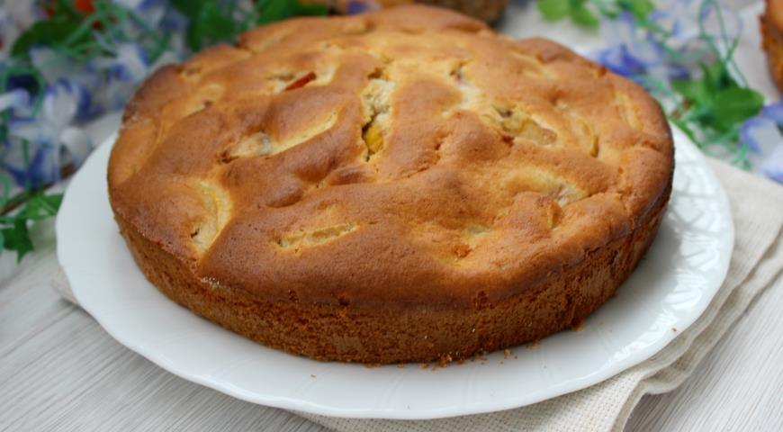

Идея классической шарлотки была позаимствована у англичан: шарлотка является одной из разновидностей пудинга, который обычно подают в тёплом виде. Дно формы выкладывают хлебом, размоченным в масле или яичной смеси. Поверх хлеба выкладывают слой готовых яблок (уваренных с сахаром или пюрированных) и закрывают слоем размоченного хлеба. Можно сделать несколько слоёв. Затем шарлотку выпекают в духовке и подают тёплой с мороженым, взбитыми сливками или сладкими соусами.
Русская шарлотка была придумана в Лондоне в начале XIX века французским поваром Мари Антуаном Каремом, состоявшим на службе у Александра I. Первоначально блюдо называлось charlotte à la parisienne (парижская шарлотка), позже десерт прославился по всему миру под именем charlotte russe (русская шарлотка). Для изготовления русской шарлотки форму выкладывают печеньем савоярди или готовым бисквитом и заполняют баварским кремом и взбитыми сливками. Затем десерт следует остудить до затвердения.
Готовим Шарлотку по русски (упрощеный вариант).
Нам понадобится:
Шаги:

Тебе нужно сделать точно такой же сайт, постарайся повторить максимально точно.
Не спеши и будь внимателен!
Использованы Google font шрифты:
Заголовки - Pacifico
Основной шрифт - Alice